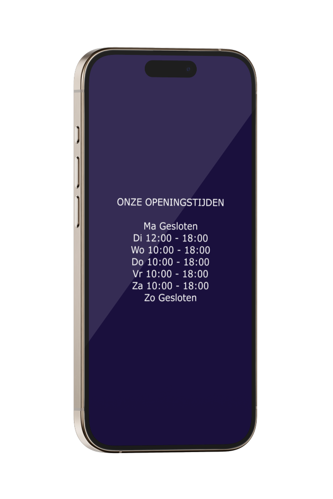

GSM Reparatie Purmerend
Voor uw smartphone reparatie, tablet reparatie én Mac

Openingstijden van onze GSM Reparatiewinkel in Purmerend
Onze winkel is geopend van maandag tot en met zaterdag, zodat u altijd bij ons terecht kunt voor al uw telefoonreparaties en -accessoires. Kom langs voor deskundig advies en snelle service! Bekijk hieronder onze specifieke openingstijden:


Ondersteunende modellen
0
Succesvolle Reparaties
0
Partners
10
Supporter
500+